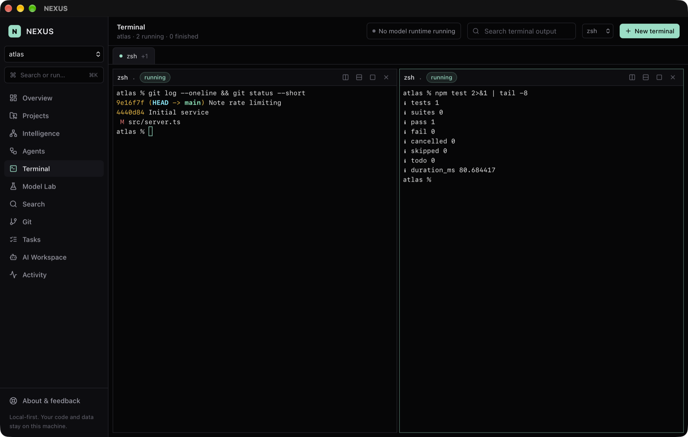
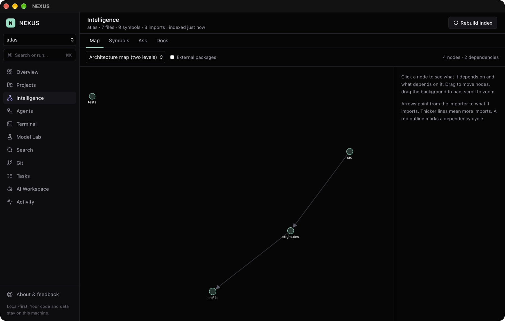
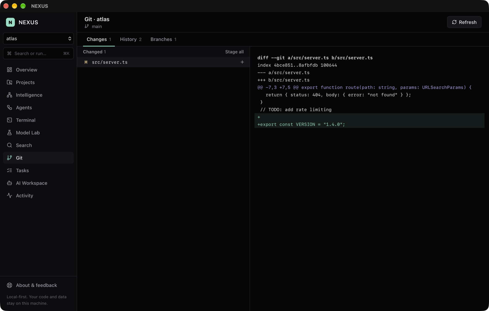
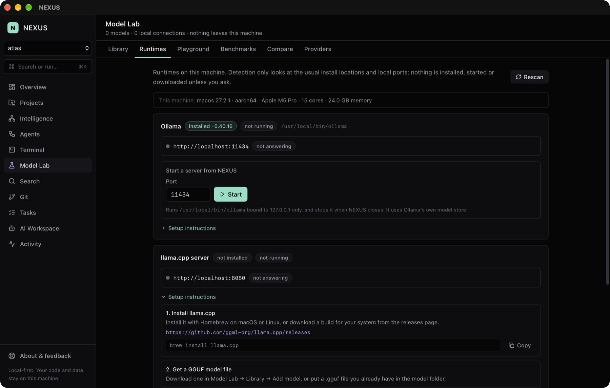
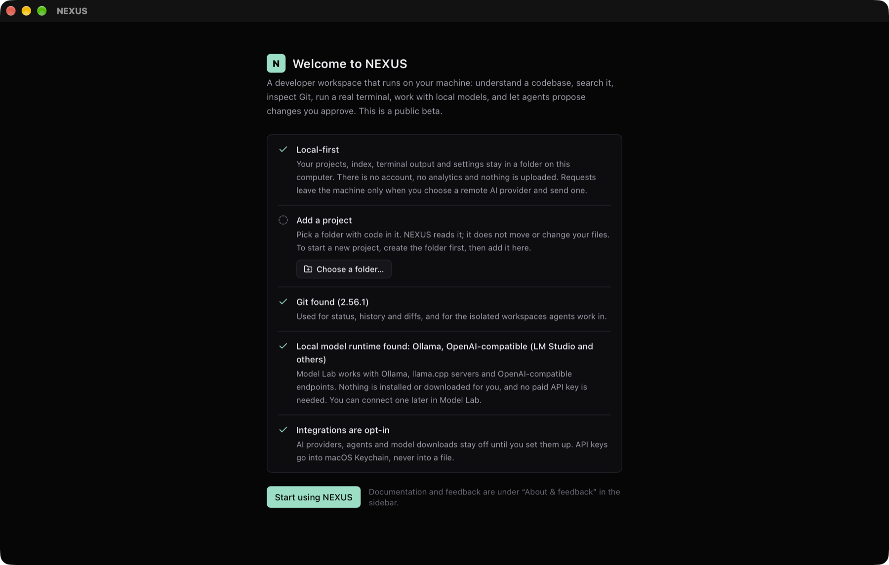

One workspace for understanding, running and changing your code. On your machine.
NEXUS brings code intelligence, search, Git, a real terminal, local models and approval-gated agents into one desktop app. It works without an account and without an AI key, and your code stays on your computer.
Free and open source (MIT). macOS, Windows and Linux. Beta software: expect rough edges and please report them.

Who it is for
Developers who work in several repositories and want to see how a codebase fits together, run things, and try local AI models, without sending their source code to a service.
Joining a codebase
See modules, dependencies and cycles on a map; jump to symbols and references; ask where something is handled and get the source lines.
Everyday work
Search across projects, read diffs, stage files, and keep project shells open in tabs and splits that are still there after a restart.
Trying local models
Connect Ollama or a llama.cpp server, run prompts, and measure speed on your own hardware before choosing a model.
What it does
Each area is marked by how far along it is. “Available” means it is built and tested on macOS; see Platforms for Windows and Linux.
Projects Available
Import local folders. Languages, frameworks and dependencies are detected, with findings such as possible secrets and oversized files.
Intelligence Available
Code index for Rust, TypeScript, JavaScript, Python and Go. Dependency map, symbol and reference search, source lookup for questions. Works with no AI.
Search Available
File-name and content search (text or regex) across every project, respecting .gitignore.
Git Available
Branch and upstream state, changed files with diffs, history and branches. Stage and unstage. No committing or pushing from the app yet.
Terminal Available
Your own shell in real pseudo-terminals: zsh, bash or fish on macOS and Linux, PowerShell or Command Prompt on Windows. Tabs, splits, saved output, search.
Tasks Available
Step lists for a project. Every command waits for your approval, destructive-looking ones are flagged, output streams live.
Model Lab Experimental
Detects Ollama, llama.cpp and OpenAI-compatible servers; lists their models; a playground with streaming; repeatable benchmarks on your hardware; model downloads you start yourself.
Agents Experimental
Describe an outcome; agents research, plan, implement, test and review in an isolated Git worktree. The plan, every command and the final diff each need your approval. Needs an AI provider.
Planned Not built
Commit and push from the app, a testing lab, signed installers and automatic updates. These are not in the beta.
Screens
Taken from the running app on a small demo project.





Supported platforms
What has actually been checked for this beta. “CI” means automated tests and an automated install-and-launch check on a clean machine, with nobody looking at the window.
| System | Packages | Status |
|---|---|---|
| macOS 12 or later Apple Silicon and Intel | .dmg | The reference platform: developed and used here. The Intel build is compiled and packaged, and launched only under Rosetta, not on an Intel Mac. |
| Windows 10 and 11 64-bit | -setup.exe, .msi | New in this beta. Built, tested, installed and launched automatically in CI; not yet used by hand. Please report problems. |
| Linux x86-64, glibc 2.35+ | .AppImage, .deb, .rpm | New in this beta. Built, tested, installed and launched automatically in CI on Ubuntu 22.04 only. Other distributions are untested. |
Download
Installers, checksums (SHA256SUMS.txt) and a manifest are attached to each release on GitHub.
The beta installers are not code-signed or notarized. Your system will warn you the first time; the steps below explain what to expect. Check the SHA-256 of your download against SHA256SUMS.txt.
Install
macOS
Open the .dmg and drag NEXUS to Applications. Because the beta is unsigned, the first launch is blocked: right-click NEXUS, choose Open, then Open again (or allow it under System Settings → Privacy & Security).
Windows
Run NEXUS_{{VERSION}}_x64-setup.exe. SmartScreen will show “Windows protected your PC” because the installer is unsigned: choose More info → Run anyway. It installs for your user only and needs no administrator rights. Git for Windows is needed for Git features.
Linux
Debian or Ubuntu: sudo apt install ./NEXUS_{{VERSION}}_amd64.deb. Fedora or RHEL: sudo dnf install ./NEXUS-{{VERSION}}-1.x86_64.rpm. Anything else: make the .AppImage executable and run it. NEXUS needs WebKitGTK 4.1 and, to store API keys, a Secret Service such as GNOME Keyring or KWallet.
Updating: install the new version over the old one. Your projects list, settings and history are kept; NEXUS never modifies your project folders during an update.
Privacy
- No account, no analytics, no telemetry, no crash uploads.
- Your code, the code index, terminal output and settings stay in a folder on your computer.
- API keys go into the macOS Keychain, Windows Credential Manager or the Linux Secret Service, never into a file.
- Network requests happen only when you ask for them: sending a prompt to a provider you configured, searching for or downloading a model, or opening a link.
- The diagnostic report in “About & feedback” is shown to you first and is never sent by the app.
Feedback
This beta exists to find out what breaks on machines that are not ours. Reports are public GitHub issues and need a GitHub account.
In the app, “About & feedback” shows your version and a diagnostic report you can copy into the form.